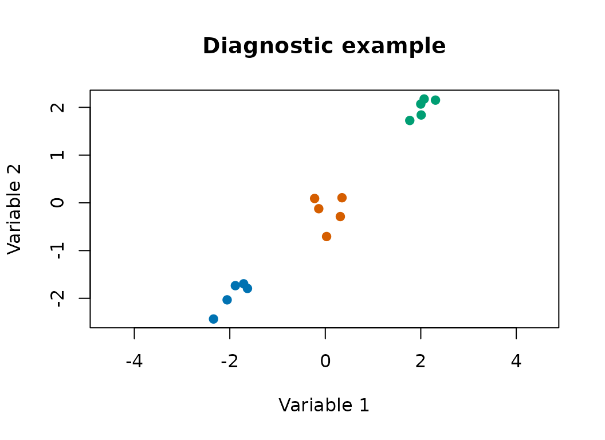
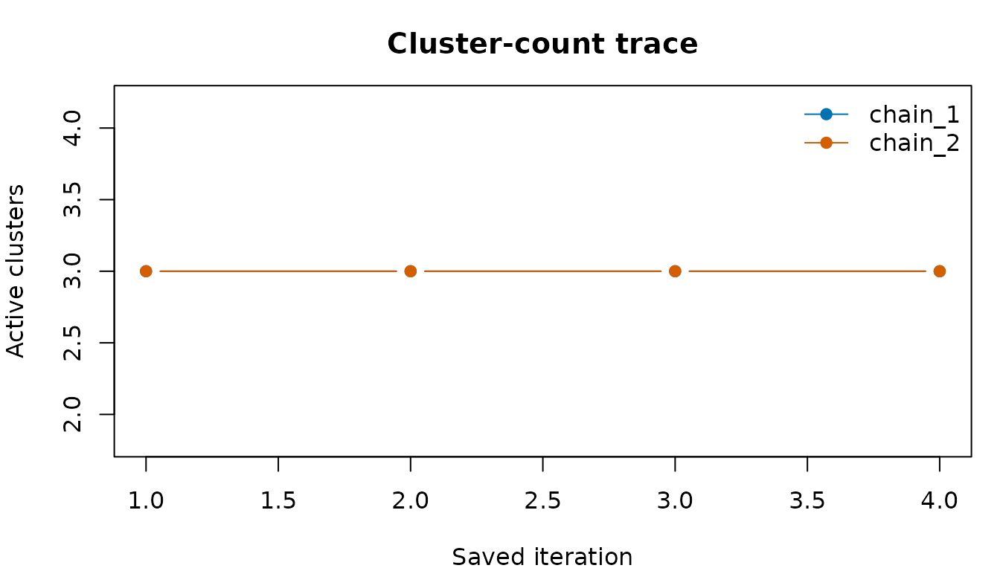
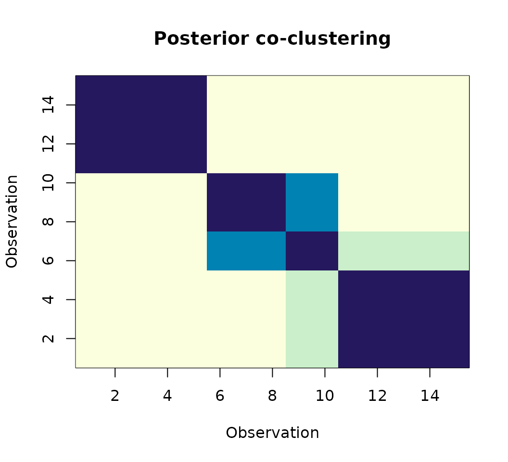

Posterior diagnostics and multiple chains
Source:vignettes/posterior-diagnostics.Rmd
posterior-diagnostics.RmdThis article shows how to inspect posterior samples after fitting
bpgmm. It complements the model-selection vignette: instead
of introducing a larger data set, it focuses on diagnostics that can be
reused in applied analyses.
The chains in this vignette are deliberately short so that the article builds quickly. In real work, use longer chains and inspect stability carefully.
Simulate a compact diagnostic example
library(bpgmm)
#> bpgmm 1.2.9 loaded. If you use bpgmm in published work, please cite it with citation("bpgmm").
set.seed(2029)
X <- cbind(
matrix(rnorm(10, mean = -2.0, sd = 0.25), nrow = 2),
matrix(rnorm(10, mean = 0.0, sd = 0.25), nrow = 2),
matrix(rnorm(10, mean = 2.0, sd = 0.25), nrow = 2)
)
known_labels <- rep(1:3, each = 5)
cluster_cols <- c("#0072B2", "#D55E00", "#009E73", "#CC79A7")
plot(
X[1, ], X[2, ],
col = cluster_cols[known_labels],
pch = 19,
xlab = "Variable 1",
ylab = "Variable 2",
main = "Diagnostic example",
asp = 1
)
Run independent chains
pgmm_rjmcmc_chains() runs independent chains. The
vignette uses cores = 1 for CRAN portability, but users can
increase cores locally.
fits <- pgmm_rjmcmc_chains(
X = X,
m_init = 3,
m_range = c(1, 4),
q_new = 1,
burn = 1,
niter = 4,
constraint = "UUU",
m_step = 1,
v_step = 1,
chains = 2,
cores = 1,
seed = 2029,
verbose = FALSE
)
length(fits)
#> [1] 2
attr(fits, "chain_seeds")
#> [1] 370199374 178884786Summarize each chain
chain_summaries <- lapply(fits, summarize_pgmm_rjmcmc, true_cluster = known_labels)
data.frame(
chain = names(chain_summaries),
ari = vapply(chain_summaries, function(x) x$ari, numeric(1)),
modal_clusters = vapply(chain_summaries, function(x) {
as.integer(names(which.max(x$n_clusters)))
}, integer(1))
)
#> chain ari modal_clusters
#> chain_1 chain_1 1.0000000 3
#> chain_2 chain_2 0.1452145 3Trace cluster counts and covariance models
The posterior samples store the active cluster indicators and covariance constraint at each saved iteration. These are useful first diagnostics.
cluster_count_trace <- function(fit) {
vapply(fit$active_cluster_samples, sum, numeric(1))
}
constraint_trace <- function(fit) {
vapply(fit$constraint_samples, constraint_to_model, character(1))
}
cluster_traces <- lapply(fits, cluster_count_trace)
constraint_traces <- lapply(fits, constraint_trace)
cluster_traces
#> $chain_1
#> [1] 3 3 3 3
#>
#> $chain_2
#> [1] 3 3 3 3
constraint_traces
#> $chain_1
#> [1] "UUU" "CUU" "CUC" "CCC"
#>
#> $chain_2
#> [1] "UUU" "UCU" "UCC" "UCC"
old_par <- par(mar = c(4, 4, 3, 1))
plot(
cluster_traces[[1]],
type = "b",
pch = 19,
ylim = range(unlist(cluster_traces)),
col = "#0072B2",
xlab = "Saved iteration",
ylab = "Active clusters",
main = "Cluster-count trace"
)
lines(cluster_traces[[2]], type = "b", pch = 19, col = "#D55E00")
legend("topright", legend = names(fits), col = c("#0072B2", "#D55E00"), lty = 1, pch = 19, bty = "n")
par(old_par)Posterior co-clustering matrix
A co-clustering matrix estimates how often two observations are assigned to the same cluster across posterior samples. This is often more informative than a single modal allocation.
co_clustering_matrix <- function(fit) {
n <- length(fit$allocation_samples[[1]])
out <- matrix(0, n, n)
for (allocation in fit$allocation_samples) {
out <- out + outer(allocation, allocation, "==")
}
out / length(fit$allocation_samples)
}
co_mat <- co_clustering_matrix(fits[[1]])
round(co_mat[1:6, 1:6], 2)
#> [,1] [,2] [,3] [,4] [,5] [,6]
#> [1,] 1.00 1.00 1.00 1.00 1.00 0.25
#> [2,] 1.00 1.00 1.00 1.00 1.00 0.25
#> [3,] 1.00 1.00 1.00 1.00 1.00 0.25
#> [4,] 1.00 1.00 1.00 1.00 1.00 0.25
#> [5,] 1.00 1.00 1.00 1.00 1.00 0.25
#> [6,] 0.25 0.25 0.25 0.25 0.25 1.00
image(
seq_len(nrow(co_mat)),
seq_len(ncol(co_mat)),
co_mat[nrow(co_mat):1, ],
col = hcl.colors(20, "YlGnBu", rev = TRUE),
xlab = "Observation",
ylab = "Observation",
main = "Posterior co-clustering"
)
What to look for
Useful warning signs include:
- cluster-count traces that stay at the boundary of
m_range; - very different posterior summaries across independent chains;
- covariance-model traces that never move when
v_step = 1; - co-clustering matrices with no clear block structure;
- sensitivity to scaling,
q_new, orm_range.
These diagnostics do not replace a long MCMC analysis, but they make the posterior output easier to inspect and report.